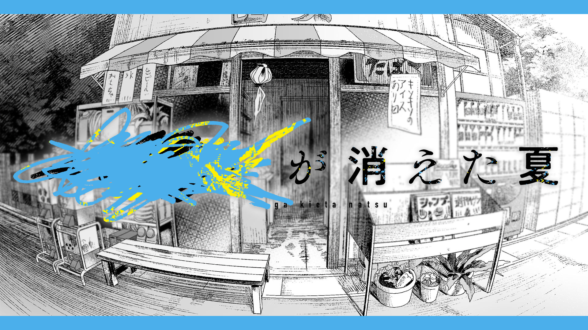
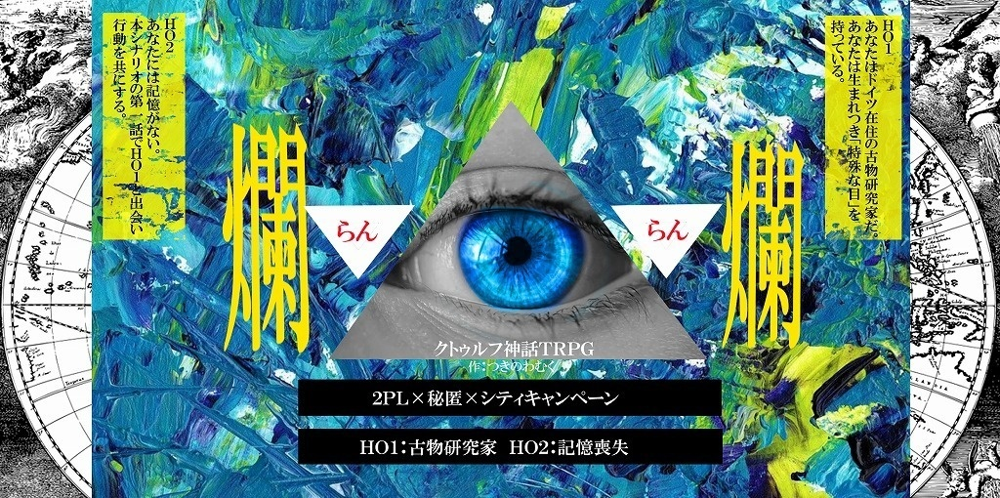
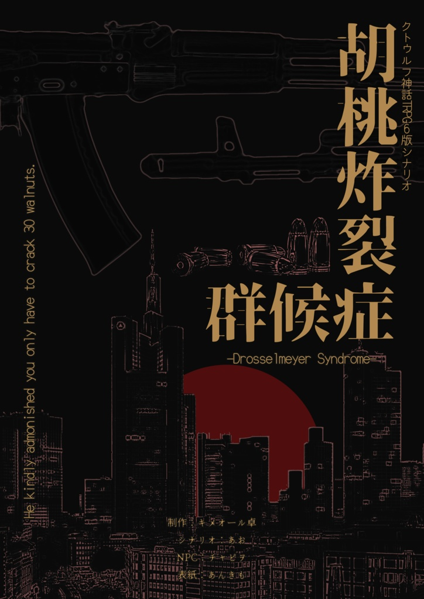
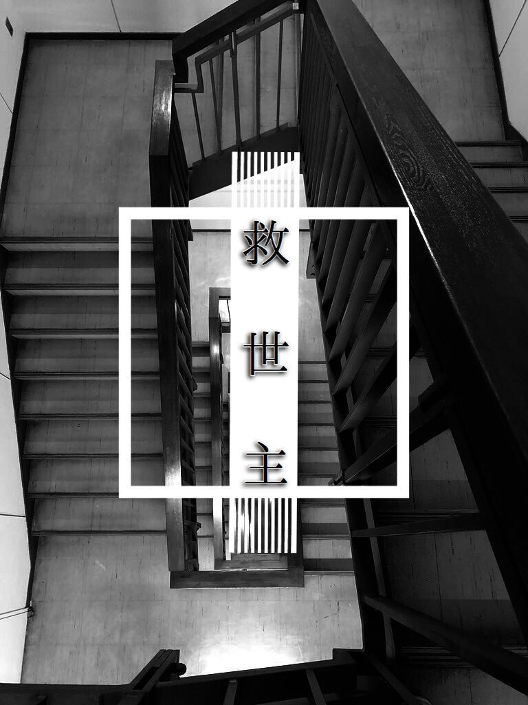
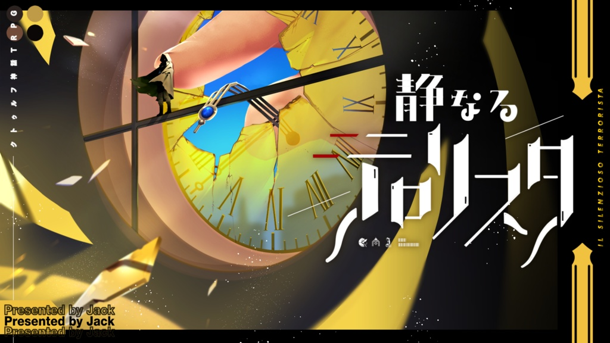
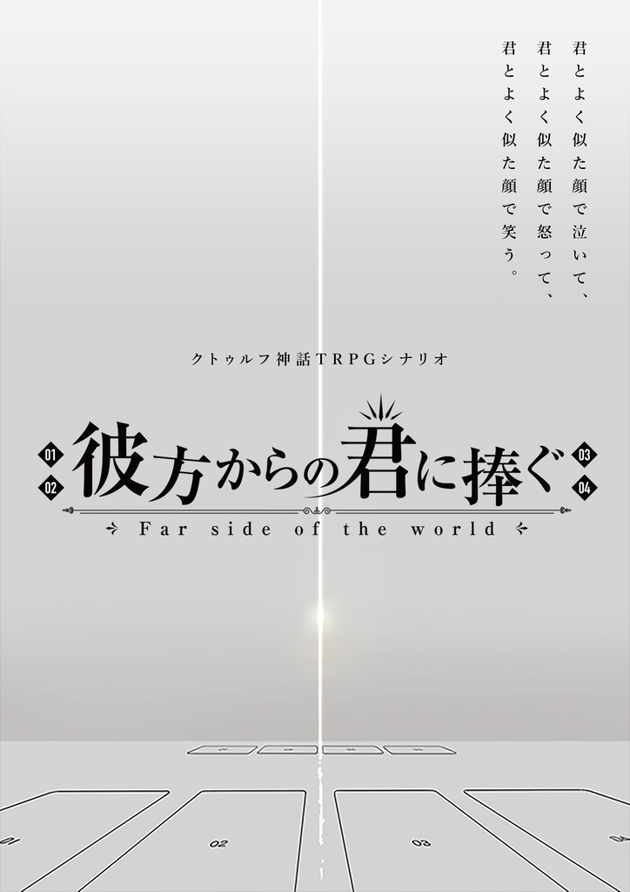

- トップ >
- おすすめシナリオ
おすすめシナリオ
最近のおすすめシナリオを6つセレクト
████が消えた夏

このシナリオはKADOKAWA公認の元、漫画「光が死んだ夏」の世界観・舞台で展開するシナリオです。漫画本編のネタバレはなく、また、漫画「光が死んだ夏」を全く知らない状態で遊んでも隅々まで楽しめるように作成しています。
爛爛

特殊な目を持つ古物研究家のHO1と記憶喪失のHO2の出会いから始まる全四話キャンペーンシナリオ。
世界にあまねく陰謀と謎 そして迫りくる危機に挑む。
「あなたがた」のための物語。
胡桃炸裂症候群 -Drosselmeyer Syndrome-

怖気づく私を勇気づけてくれた
君はただ30個の胡桃を割れば良いのだと
そう優しく諭してくれたのだ
公安と刑事が様々な事件を解決するクトゥルフ神話TRPGシナリオ
救世主

探索者達は仲の良い幼馴染だ。
「あいつ、神の子になったらしい」
___その一報が来るまでの話であった。
静なるテロリスタ

これは君たち４人の人生を描く たった一度だけのクロスオーバー
《 西暦2021年10月10日 》
秋、それはまさに芸術の季節。あなたは芸術都市ミラノにてオープンするエテルノ美術館の招待状を手にしていた。その展示会に連なるは名だたる芸術家の作品や古来より眠っていた工芸品の数々。その日、あなたはある目的を胸に秘めながら、そんな美術品たちを見つめている。
「静粛に。今をもって当会場は我々が占拠した」
彼方からの君に捧ぐ

大地を闊歩する「旧支配者」達の歌声が。
君とよく似た顔で泣いて、
君とよく似た顔で怒って、
君とよく似た顔で笑う。
君たちは「旧支配者」の為の生贄なのだ。
ほら、その顔をよく見せてくれ。